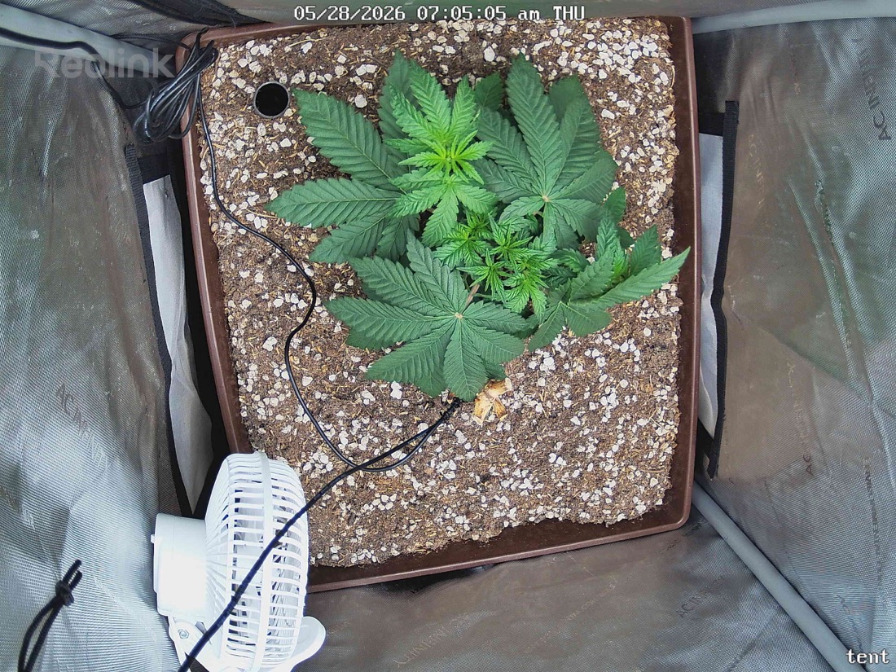

← All reports
May 28, 2026
Thu May 28, 2026 — 7:05 AM

Prognosis
Daily check — 2026-05-28 (Day 30 from germ, Day 5 post-top)
- Growth: Visible expansion of the two lateral branches at the top node — they've widened the canopy and lifted slightly compared to yesterday. New center growth between them looks fresh and symmetric, classic post-topping "two-cola" formation.
- Color/structure: Uniform deep green across all fans, petioles upright, leaves flat and slightly praying — strong light response at 400 PPFD with no curl.
- Posture: No droop, no taco, no clawing. Stem looks stocky and the plant is sitting confidently in the pot.
- Stress signs: None. No bleaching, no tip burn, no interveinal yellowing, no pest evidence on the soil or leaves. Soil surface looks appropriately dry on top (Day 5 since the 5/23 water) — that's expected, not a problem.
- Phase check: ~4 weeks from germ, ~3 weeks in tent, recently topped — you should be seeing exactly this: lateral nodes waking up, no vertical surge yet, healthy color under increased light. Right on schedule for early veg.
- Water: Surface dryness + Day 5 timing means you're in the window — lift the pot or finger-test 1–2" down; if dry, water today, otherwise tomorrow is fine.
- Suggested next action: No action needed beyond your normal water check. Hold PPFD at 400, keep 18/6, let the two new tops establish for another few days before any further training.
Overall: Textbook recovery from the top — healthy, symmetric, on pace. Nothing to fix.